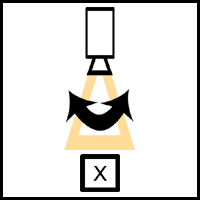
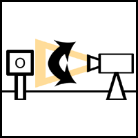
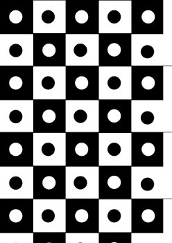
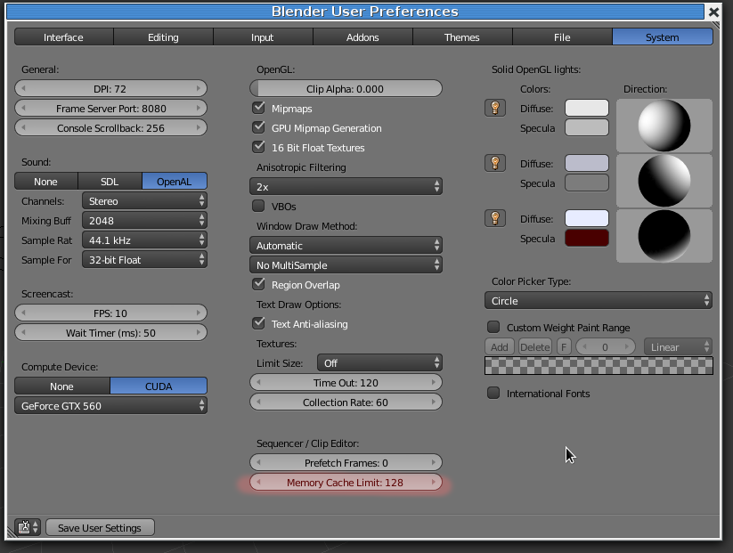

Camera Motion Tracking
"Match moving" ou "motion tracking" é uma técnica de efeitos visuais (VFX) que permite a inserção de imagens geradas em computador numa filmagem vídeo (live-action) com a posição, escala, orientação e movimento corretos em relação aos objetos presentes na tomada de imagem.
Desde 2012, o Blender disponibiliza funcionalidades de Camera Tracking. Ou seja, permite calcular o movimento da câmara que capturou a imagem vídeo original e aplicar o mesmo movimento à câmara virtual presente na 3D View. Deste modo, é possível renderizar objetos no Blender com uma câmara que apresenta caraterísticas (posição, movimento, etc.) similares à da câmara da captura original.
O resultado da composição da imagem vídeo original com a imagem renderizada com uma câmara que apresenta caraterísticas (posição, movimento, etc.) similares à da câmara da captura original é a criação da ilusão da inserção de imagens geradas em computador na filmagem vídeo.
- Capturar mudança de perspetiva
- É necessário que a filmagem capture mudança de perspetiva sobre a área onde se pretende fazer tracking. Câmara parada, pan e tilt (imagens abaixo) ou movimento demasiado subtil são más opções.


Imagens retiradas Moura, G. (junho, 2014). Camera Moves. Elements of Cinema.
- Utilizar marcadores
- É útil filmar marcadores. Estes devem ser colocados na área filmada e criam ótimos pontos para posteriormente fazer tracking.

Marcador utilizado no filme Tears of Steal (Blender Foundation, 2012). Clique
aqui para descarregar versão para impressão.
- Espalhar marcadores
- É util ter marcadores espalhados em profundidade (do primeiro plano ao plano de fundo) e em largura/altura.
- Evite estabilização automática
- Não utilize estabilizador automático da lente. Esta irá mexer-se (ajustar-se) durante a filmagem e distorce a imagem. Durante o tracking, os marcadores irão deslizar ou exibir
um comportamento estranho.
- Evite desfocar e velocidade baixa do obturador
- Evite o máximo de desfocagem. Tenha especial cuidado com a profundidade de campo e motion blur. Câmara em movimento com velocidade baixa do obturador (exposição longa) produz imagem com desfoque. O
desfoque dificulta o tracking.
- Mantenha a distância focal
- Mantenha a distância focal durante a filmagem. Não se esqueça de registar a distância focal utilizada!
- Evite instabilidade e brusquidão na filmagem
- Evite movimentos bruscos e câmara muito instável porque estas dificultam o tracking.
Os procedimentos iniciais preparatórios para fazer tracking com 1, 4 ou mais pontos, são sempre similares.
- Recolha os metadados
- Selecione o ficheiro vídeo que vai utilizar e, sempre que possível, para facilitar o processo,
recolha as seguintes informações: modelo da câmara (dimensão do sensor), distância focal, resolução e
Frames Por Segundo (FPS). Estes dados são sobretudo importantes para um tracking completo. O tracking de 1 e 4 pontos pode ser
feito sem estes dados.
- Converta vídeo para sequência de TGAs
- Embora seja possível fazer o tracking a partir de um ficheiro vídeo, recomenda-se a conversão para uma sequência de imagens.
Recomenda-se a conversão para ficheiros do tipo TGA (Targa) para não perder informação (compressão).
Utilize o Video Sequencer Editor do Blender para converter o seu ficheiro de vídeo para uma sequência de imagens.
- Aumente a memória cache disponível para a tarefa
- Nas preferências do Blender, aumente a memória disponível para poder ter mais frames armazenadas em cache e o processo ser mais regular.

Nos textos seguintes iremos utilizar os ficheiros disponibilizados abaixo. Todos os ficheiros foram gravados por
Sebastian Koenig e os 3 primeiros fazem parte do DVD
Track, Match Blend.
| Nome |
Câmara |
Lente |
FPS |
Resolução |
Download |
| 1ponto.mp4 |
n/d mas não é necessário |
n/d mas não é necessário |
25 FPS |
1920x1080 |
link |
| 4pontos.mp4 |
n/d mas não é necessário |
n/d mas não é necessário |
25 FPS |
1920x1080 |
link |
| camera_tracking.mp4 |
Canon 550D (sensor size: 22.3) |
18mm |
29.97 FPS |
1920x1080 |
link |
| camera_tracking2.mp4 |
Canon 550D (sensor size: 22.3) |
35mm |
25 FPS |
1920x1080 |
link |